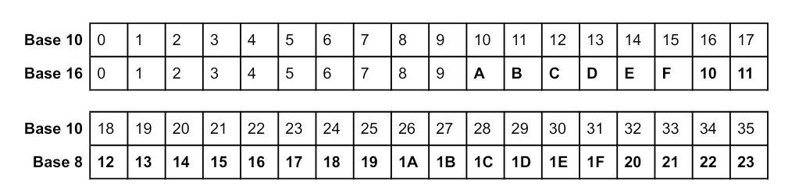
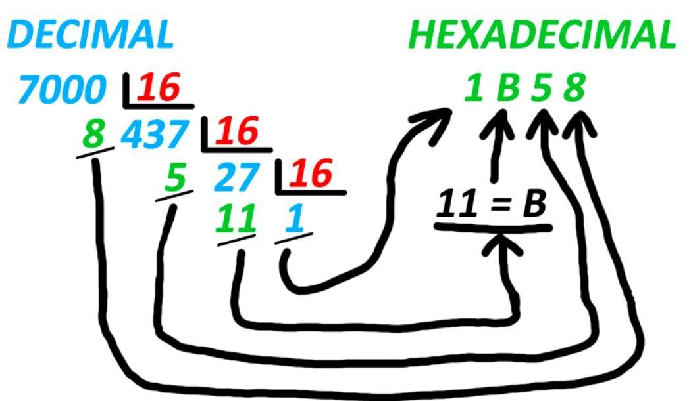
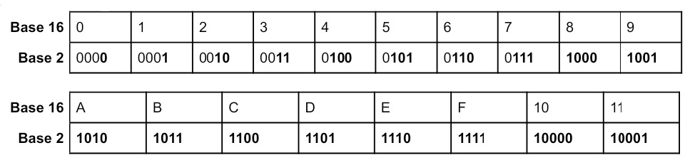
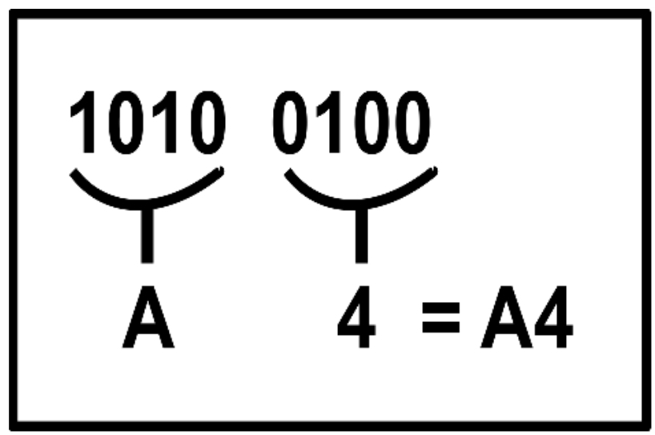
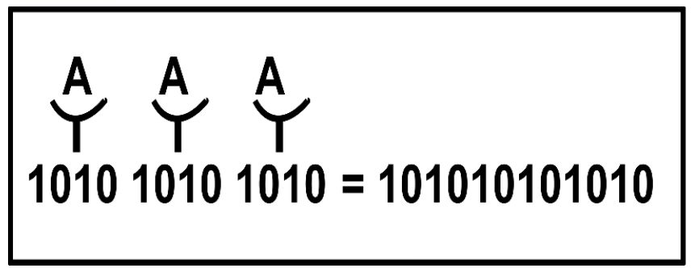

NÚMEROS HEXADECIMAIS
Os números hexadecimais possuem base 16, sendo composto pelos dígitos de 0 à 9, mais as letras de A à F Igual nos números binários, os hexadecimais têm o mesmo valor nos números que fazem parte da base, mas acrescentando valor às letras que agora estão incluídas. Continua sendo uma ordem crescente: 0, 1, 2, 3, 4, 5, 6, 7, 8, 9, A, B, C, D, E e F.

BASE 10 PARA A BASE 16
Para a conversão da base 10 para a base 16, é necessário fazer divisões sucessivas.
Dividindo o número, por 16 e guardando o resto.
Seguindo, dividir o quociente por 16 e guardar o resto novamente.
Repetir isso até o quociente ser menor ou igual a 15.
O número no sistema octal será o quociente da última divisão e todos os restos, da direita para a esquerda.

BASE 16 PARA A BASE 10
Para converter a base 16 em base 10, deve-se multiplicar o número, por 16 elevado a um número, em ordem crescente, começando do zero, da direita para a esquerda. Ou seja, multiplicamos o dígito pela potência da base 16. Após calculado, é somado as contas, o resultado será o dígito em base 10.
BASE 2 PARA A BASE 16
Parecido com a conversão da base 2 para a base 8, a conversão para a base 16 também é feita utilizando uma espécie de régua, como a do exemplo abaixo.

Primeiramente você irá separar os números binários em grupos de quatro digitos, depois, comparar com os números da régua.
Exemplo:

BASE 16 PARA A BASE 2
Para a conversão da base 16 para a base 2, será feito o processo inverso ao da base 2 à base 16. Utilizando a mesma régua, você irá comparar o número em hexadecimal e verificar qual seria em binário e substituir.
Exemplo:
